À propos
Je suis Maïlis Honoré--Muet, étudiante en deuxième année de BUT Réseaux et Télécommunications à l'IUT de Blagnac. J'ai choisi cette formation car j'aimerais travailler en cybersécurité, un secteur qui me passionne. Je suis déterminée et rigoureuse dans mon travail.
Forte de ces compétences je suis à la recherche d'un stage d'une durée de 10 semaines lors de ma deuxième BUT, afin de développer mes compétences en Réseaux et Télécommunications en entreprise et d'améliorer mon anglais. Le stage se déroulera du 5 Avril 2027 au 11 juin 2027.
Diplômes & Formations
Depuis 2025
BUT Réseaux et Télécommunications
BUT Réseaux et Télécommunications
IUT de Blagnac - Blagnac (31) - Depuis 2026
- QU'EST CE QUE C'EST : Le BUT Réseaux et Télécommunications est une formation en 3 ans dans le domaine du numérique.
- OBJECTIF : (Selon UCA.fr) "Son objectif est de former des techniciens polyvalents qui maîtrisent les réseaux (entreprises, opérateurs, Internet) et systèmes informatiques, les télécoms (transmissions, téléphonie), l'informatique (programmation, cloud, web). Ils sont capables d’installer, de configurer, de sécuriser et faire évoluer les équipements et l’informatique nécessaires aux réseaux et aux télécommunications."
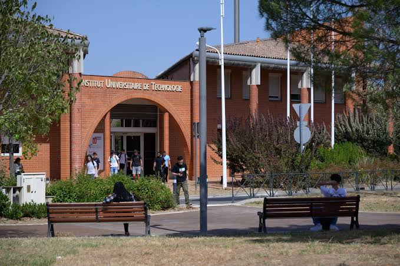
-
COMPÉTENCES ACQUISES : (Selon UCA.fr)
- Administrer les réseaux et l’Internet
- Connecter les entreprises et les usagers
- Créer des outils et applications informatiques pour les R&T
- Administrer un système d’information sécurisé (parcours Cybersécurité)
- Surveiller un système d’information sécurisé (parcours Cybersécurité)
IUT Clermont Auvergne - Aubière (63) - 2025/2026
Première année de BUT RT réalisé au sein de l'IUT de Clermont Auvergne à Aubière.
Juin 2026
BAFA - 1ère partie
BAFA - 1ère partie
Bordeaux (33)
- QU'EST CE QUE C'EST : Le BAFA est le Brevet d'Aptitude aux Fonctions d'Animateur
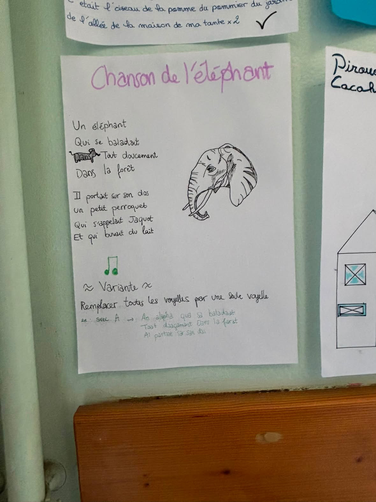
-
COMPÉTENCES ACQUISES : (Selon bafa.ufcv.fr, passerlebafa.com)
- Connaissance des publics et des structures.
- Réglementation et sécurité.
- Techniques et outils d'animation.
- Travail en équipe et vie collective.
- Posture éducative et communication
Mars 2026
PSC (Premiers Secours Citoyen)
PSC (Premiers Secours Citoyen)
Aubière (63)
- QU'EST CE QUE C'EST : Le PSC est une formation de premiers secours qui permet à toute personne d’apprendre à réagir efficacement en cas d’urgence avant l’arrivée des secours professionnels.
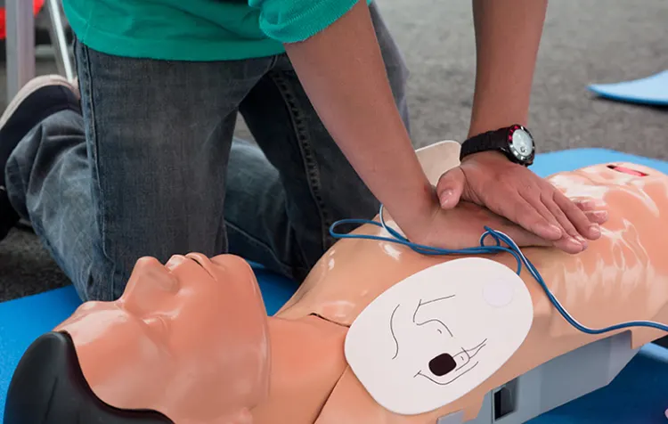
-
COMPÉTENCES ACQUISES : (Selon UCA.fr)
- Reconnaissance des signes de malaise et alerte efficace.
- Gestes de premiers secours sur des plaies et protection des blessés.
- Réaction face aux brûlures, traumatismes physiques, hémorragies et obstructions des voies aériennes.
- Administrer un système d’information sécurisé (parcours Cybersécurité)
- Pratique de la réanimation cardio-pulmonaire (RCP) un système d’information sécurisé (parcours Cybersécurité)
2024-2025
Licence 1 de Théâtre - obtenue -
Licence 1 de Théâtre - obtenue -
Université Bordeaux Montaigne, Bordeaux (33)
- QU'EST CE QUE C'EST : La Licence Théâtre est une formation en 3 ans dans le domaine des arts du spectacle.
- OBJECTIF : (Selon u-bordeaux-montaigne.fr) "Les objectifs de la licence Théâtre sont pluriels : [...] elle entend ouvrir les étudiants aux cultures et spectacles du monde (théâtres du monde), à des approches culturelles et critiques des spectacles (anthropologie, sociologie, ethnographie) et à l’environnement institutionnel et professionnel des métiers du spectacle vivant (droit et économie de la culture, forum des métiers, etc.)."
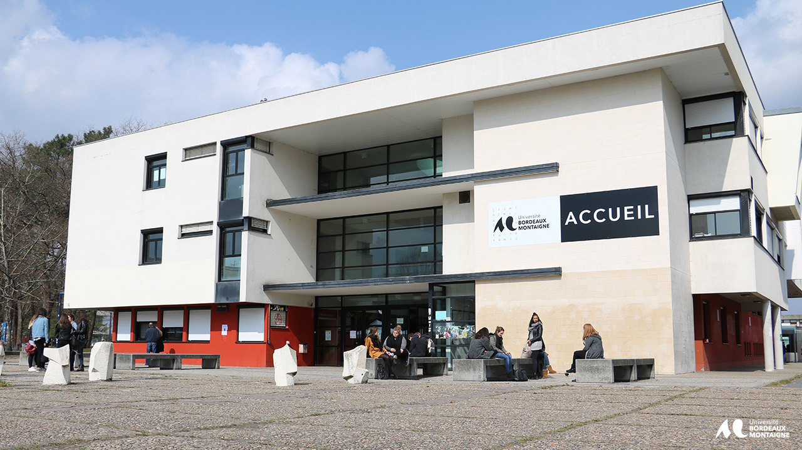
-
COMPÉTENCES ACQUISES : (Selon u-bordeaux-montaigne.fr)
- Développer une argumentation à l'écrit comme à l'oral et analyser avec esprit critique diverses ressources dans son domaine de spécialité
- Maîtriser les instruments bibliographiques, et les principales techniques de recherche documentaire
- Comprendre les enjeux d’un recrutement et de l’identité numérique
2023-2024
1 ère année d'École Nationale Supérieure d'Architecture - obtenue -
1 ère année d'École Nationale Supérieure d'Architecture - obtenue -
ENSA Paris Val de Seine, Paris (75)
- QU'EST CE QUE C'EST : L'école National Supérieure d'Architecture est une formation en 3 ans dans les domaines de l'art et la science de concevoir des espaces et des structures.
- OBJECTIF (selon onisep.fr): L'objectif de cette formation est de former des professionnels capables de concevoir des bâtiments et d'aménager des espaces.
- COMPÉTENCES ACQUISES :
- Conception Architecturale et Urbaine
- Maîtrise Technique et Constructive
- Représentation et Outils Numériques
- Culture, Sciences Humaines et Droit
2022-2023
Baccalauréat général - Mention Bien -
Baccalauréat général - Mention Bien -
Lycée Jean Renou, La Réole (33)
- QU'EST CE QUE C'EST (selon lareole.fr) : Le lycée Jean Renou est un établissement public d’enseignement général de 500 élèves environ.
- SPÉCIALITÉS : Mathématiques et Anglais Monde Contemporain
- OPTION : Musique
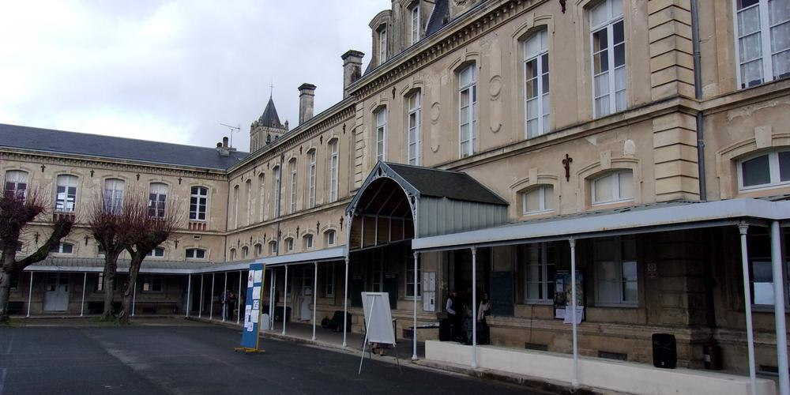
- COMPÉTENCES ACQUISES :
- Capacité d'analyse et de synthèse
- Autonomie et organisation
- Esprit critique
- Aisance à l'oral
Compétences & Qualités
RÉSEAUX
RÉSEAUX
PROGRAMMATION
PROGRAMMATION
OS (Système d'exploitation)
OS (Système d'exploitation)
TÉLÉCOMMUNICATIONS
TÉLÉCOMMUNICATIONS
LANGUES
LANGUES
Expériences Professionnelles
Depuis Septembre 2026
Membre du Bureau des Étudiants (BDE) de l'IUT de Blagnac
Membre du Bureau des Étudiants (BDE) de l'IUT de Blagnac
Brick N blagnac (BDE de l'IUT de Blagnac) - Blagnac (31)
- TITRE : Membre de Brick N Blagnac, BDE de l'IUT de Blagnac
- CONTEXTE : Membre des pôles socials et communications du BDE en parallèle de mes études.
- OBJECTIF : Animer, représenter et accompagner la vie étudiante sur le campus de l'IUT de Blagnac
- TRAVAIL : Un exemple de projet réalisé était l'organisation d'une vente de gateaux pour octobre rose et tout les fonds récoltés (environ 300€) ont été reversés à l'association Ruban rose. Pour ce projet j'ai participé à l'organisation (date, lieu, vente), j'ai choisi une association fiable et j'ai également réaliser une centaine de crêpes pour la vente.
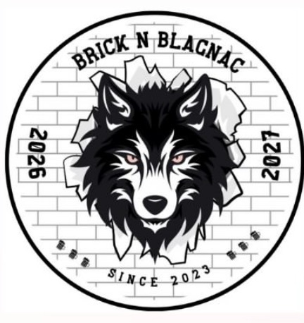
- RÉSULTATS : Ce travail m'a permis d'améliorer ma capacité à travailler en équipe,à persévérer et à prendre des initiatives, car il faut toutes ces compétences pour créer, réaliser et mener à bien un projet.
Juillet 2026
STAGE BAFA
STAGE BAFA
Accueil de Loisirs - Monsegur (33)
- TITRE : Stage BAFA
- CONTEXTE : Stage pratique en tant qu'animatrice dans le cadre de la deuxième partie du BAFA
- OBJECTIF : Valider la deuxième partie du BAFA
- TRAVAIL : Le travail effectué était l'organisation d'activités/d'animations pour les enfants du centre, tout en veillant à leur sécurité physique, morale et affective .
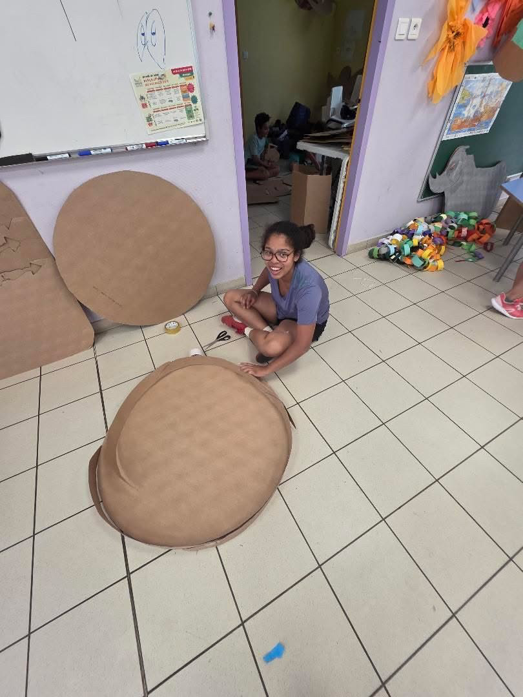
- RÉSULTATS : Ce travail m'a appris la patience, la créativité, l'adaptabilité et l'l'anticipation, car il faut toutes ces compétences pour faire rêver les enfants tout en veillant à leur sécurité.
Été 2025
CUEILLETTE DE FRUITS
CUEILLETTE DE FRUITS
- TITRE : Cueillette de fruits
- CONTEXTE : Job d'été
- OBJECTIF : Travail effectué pour mettre de l'argent de côté pour mes études
- TRAVAIL : Le travail effectué était la cueillette de fruits (brugnons, nectarines et pêches), la mise en barquette des fruits destinés à la vente et le chargement du camion pour les livraisons. Durant ce travail nous avons également fait l'épamprage des vignes. "L'épamprage consiste à supprimer les pampres, c'est-à-dire les rameaux indésirables qui poussent sur le pied de vigne ou sur le tronc." (selon chateauberne-vin.com)
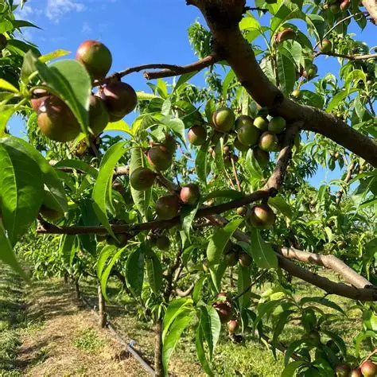
- RÉSULTATS : Ce travail m'a appris la détermination, la persévérance et l'éfficacité, car malgrés de fortes chaleurs il faut être performant et ne pas abandonner.
Février 2024
STAGE DE COUVREUR CHARPENTE
STAGE DE COUVREUR CHARPENTE
- TITRE : Stage de couvreur charpente
- CONTEXTE : Stage ouvrier dans le cadre d’étude en architecture.
- OBJECTIF : Stage effectué pour mieux comprendre les pratiques professionelles de l'entreprise du bâtiment.
-
TRAVAIL : Le travail effectué était la fabrication du béton, la pose de tuiles sur le toit, le le nettoyage du site ainsi que le démontage de la structure du toit.
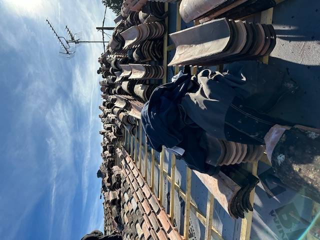
- RÉSULTATS : Ce travail m'a appris le travail manuel, la fabrication de béton et l'esprit d'équipe par le biais des 2 différents chantiers ou j'ai travaillé durant ce stage.
2022
ASSOCIATION LYCÉENNE POUR L’UKRAINE
ASSOCIATION LYCÉENNE POUR L’UKRAINE
Lycée Jean Renou - La Réole (33)
- TITRE : Association lycéenne pour l'Ukraine
- CONTEXTE : Association dans un contexte de guerre (Ukraine- Russie)
-
OBJECTIF ET TRAVAIL :
- Collectes de produits de première nécessité
- Envoi des produits récoltés à d'autres associations pour qu'ils puissent les envoyer en Ukraine
- Sensibilisation dans les classes
- RÉSULTATS : Cette association m'a appris le partage, la reconnaissance face à nos privilèges mais aussi l'organisation grâce aux collectes.
Projets - SAE (Situation d’Apprentissage et d’Évaluation)
2026
Projet Intégratif SAE24 - S2
Projet Intégratif SAE24 - S2
- TITRE : Projet intégratif: Concevoir et mettre en place une infrastructure réseau adaptée aux besoins d’une petite entreprise
- CONTEXTE : Projet de fin d'année. Travail en groupe de 3, durée : 1 mois
- OBJECTIF : L'objectif était de concevoir et de déployer une infrastructure réseau fiable, sécurisée et adaptée.
-
TRAVAIL : Le travail effectué pour cette SAE était :
- La mise en place (installation générale)
- La configuration VLAN switch et routeur
- La configuration Point d’accès Wifi
- La création base de données
- Le NAT et test de connexion
- La sécurisation du réseau
- FTP sur serveur Windows
- La création d'un compte de courrier Outlook
Schéma de l'infrastructure réseau du projet réalisé sur Cisco Packet Tracer
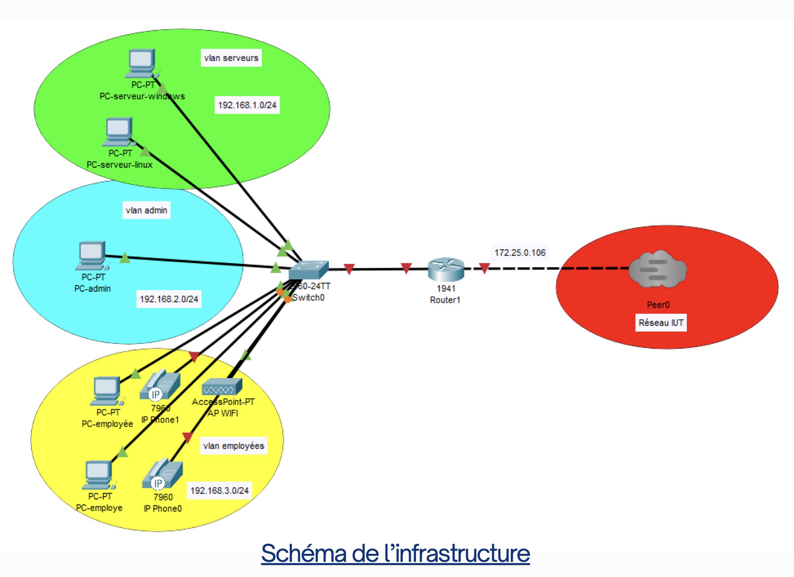
→ L'objectif était ici de visualiser l'infrastructure réseau segmentée ainsi que sa configuration IP afin de ne pas faire de fautes d'adressage IP ou d'interfaces.
Extrait du fichier de configuration du routeur
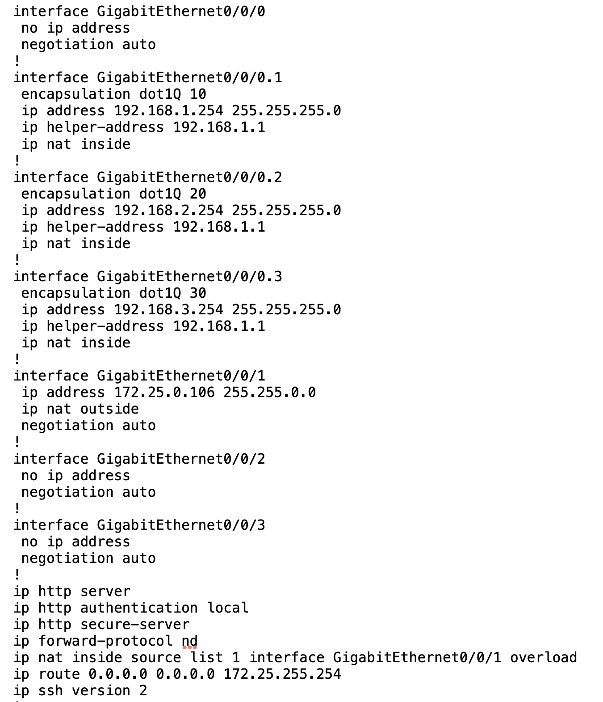
→ Sur cette image on peut voir la configuration des différentes interfaces du routeur, la configuration des accès d'administration sécurisés (SSHv2, HTTPS), d'une route statique par défaut et de la traduction d'adresses avec surcharge (PAT/NAT overload).
- RÉSULTATS : Ce projet de fin de première année m'a permis de mieux comprendre les attentes et l'infrastructure réseau d'une entreprise. Cela ma également appris à améliorer ma capacité à m'organiser suivant un délais imparti. En effet, au début ce n'était pas facile car nous n'avions pas beaucoup de temps pour réaliser ce projet, donc l'organisation était difficile à mettre en place. Mais nous avons réussi à palier à ce problème grâce à un diagramme de Gantt.
Consultez ou téléchargez au format PDF la présentation de la SEA24
Consultez ou téléchargez au format PDF toutes les étapes de configurations détaillées du projet
→ Le deuxième fichier est un fichier personnel qui nous a aidé à mieux à comprendre les configurations de chacun.
2026
Projet Matlab SAE22 - S2
Projet Matlab SAE22 - S2
- TITRE : Projet : Mesurer et caractériser un signal
- CONTEXTE :Initiation sur le logiciel MatLab, en SAÉ22. Travail en groupe de 2, durée : 24h
- OBJECTIF : L'objectif était de prendre en main Matlab, de faire le calcul numérique d'une intégrale, de faire l'étude d'un signal temporel et de faire l'étude d'un canal radio.
-
TRAVAIL : Le travail effectué était la représentation d'un signal en temporelle et en spectre grâce à l'outil Matlab. J'ai également effectué des calculs de signaux (composantes, amplitude, valeurs moyenne et efficace avec les intégrale) sur Excel.
Script Matlab (à gauche) avec le résultat (à droite)
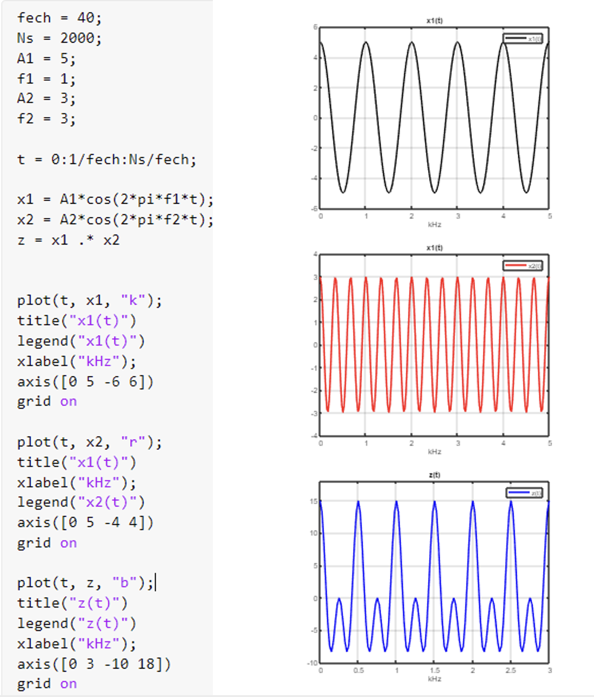
→ l'objectif était ici de créer 3 signaux avec la fonction plot
Extrait du compte rendu de la SAE22
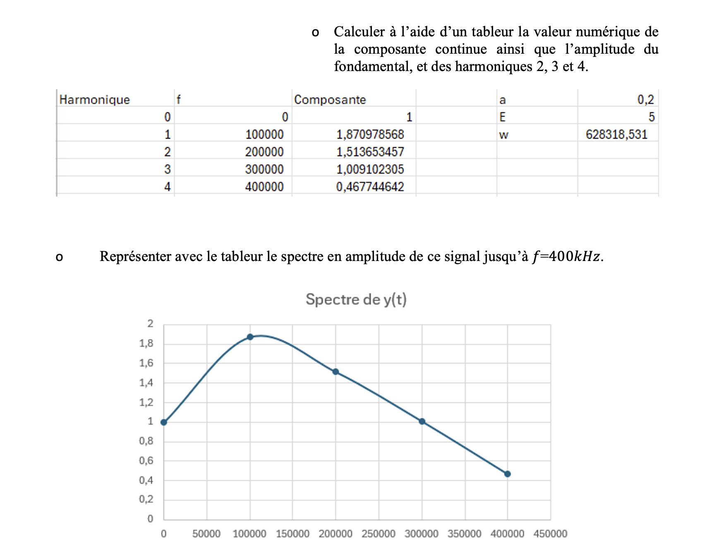
- RÉSULTATS : Ce travail m'a permis d'acquiérir les bases du logiciel Matlab, de m'amélliorer sur Excel et à me mieux comprendre les différentes composantes d'un signal.
2025
Portfolio WEB
Portfolio WEB
- TITRE : Portfolio Web
- CONTEXTE : Création d'un portfolio Web en SAÉ14.
- OBJECTIF : L'objectif était de créer un portfolio complet et numérique afin de démontrer nos compétences et réalisations à travers des projets concrets.
-
TRAVAIL : Le travail effectué était la création d'un script HTML et CSS grâce aux cours enseignés et à des recherches personnelles (exemple de site pour recherches : w3schools.com).
Extrait du code HTML de la section divers du Portfolio

- RÉSULTATS : Ce travail m'a permis de m'améliorer en HTML et CSS et à faire une introspection personnelle afin de voir les points que je dois améliorer.
2025
Configuration d'un point d’accès WiFi 802.11 et manuel Dlink DAP2020 - S1
Configuration d'un point d’accès WiFi 802.11 et manuel Dlink DAP2020 - S1
- TITRE : Configuration d'un point d’accès WiFi 802.11 et manuel Dlink DAP2020
- CONTEXTE : Exercice de TP dans le cadre du cours Initiation Réseaux, travail de groupe de 2, durée : 3h
-
OBJECTIF :
- Installer et Configurer le point d’accès manuel Dlink DAP2020 et WIFI IEEE-802.11
- manuel Dlink DAP2020
- Mettre en place une sécurité d’accès au point daccès.
-
TRAVAIL : Dans ce TP, nous étions deux. Dans ce travail de groupe, j'ai effectué la configuration manuel du Dlink DAP2020 en entrant son adresse IP par défaut (192.168.0.50) sur internet.
Page de configuration du point d'accès Wifi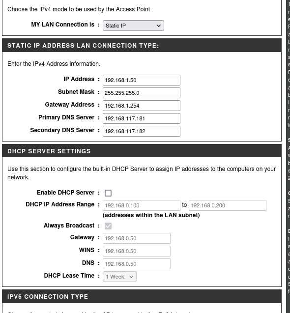
--> Adressage IP fait en statique
Pour faire la configuration du DLink il faut renseigné sa nouvelle adresse IP, son masque (en /24), l'adresse IP de la passerelle par défaut et les adresses IP du serveur DNS primaire et secondaire.
J'ai également changer l'adresse IP de l'ordinateur connecté filairement au DLink pour mettre sa carte Réseau Ethernet dans le même réseau que celui ci.
commande utilisée : sudo ip a a 192.168.1.53/24 dev enp1s0
- sudo sert a éxécuter la commande en tant qu'administrateur.
- ip a a (ip address add) sert à ajouter une adresse IP
- dev enp1s0 représente la carte Réseau Ethernet ciblée. (le dev signifie device qui veut dire appareil)
- RÉSULTATS : Le point d'accès WIFI est opérationnel
Divers
Depuis plus de 12 ans
Pratique instrumental et créations de musiques
Pratique instrumental et créations de musiques
- TITRE : Pratique instrumental et création de musiques
- CONTEXTE : Curiosité et défis personnels.
- OBJECTIF : Devenir multi-instrumentistes et être capable de produire une musique de A à Z en jouant de tous les instruments qui s'y trouve.
- TRAVAIL : J'ai commencé la musique très jeune et j'ai eu l'occasion de pratiquer en cours ou en autodidact divers instruments (batterie, clarinette, guitare, chant et oridinateur). Je fais de la MAO (Musique assistée par Ordinateur), c'est à dire que je crée de la musique avec des instruments virtuels sur mon ordinateur J'ai également fait partie d'une classe JAZZ durant toutes les années collège (Monségur 33580).
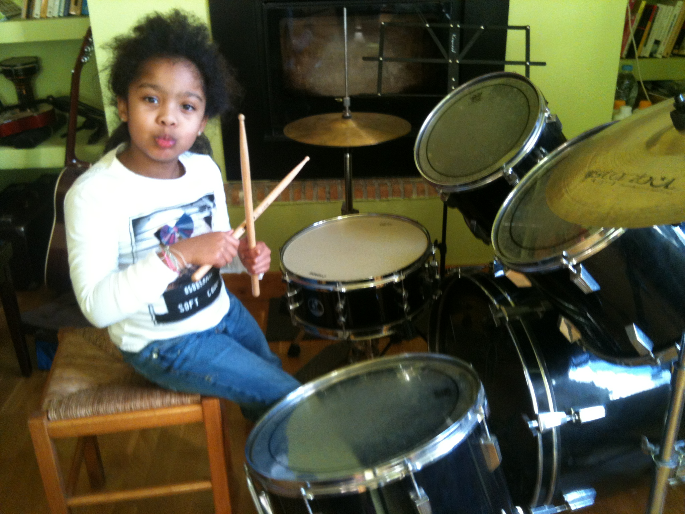
- RÉSULTATS : Cette passion m'a appris l' écoute, la polyvalence et la communication (autre que par des mots).
2023
Participation à l’orchestre européen
Participation à l’orchestre européen
- TITRE : Participation à l’orchestre européen (en clarinette)
- CONTEXTE : Participation dans le cadre d'un échange avec Erasmus+ et avec l'option musique de mon lycée.
- OBJECTIF ET TRAVAIL : Apprendre et faire une représentation des morceaux du groupe cubain Buena Vista Social Club.
- Vidéo d'une des représentation durant cet échange :
- RÉSULTATS : Cette échange m'a permis d'améliorer mon anglais, grâce à tous les musiciens européens (Italie, Malte, Espagne, Roumanie, ...) présents. J'ai également appris l'écoute surtout quand on joue dans un groupe aussi grand.
Depuis 3 ans
Dessin
Dessin
- TITRE : Dessin
- CONTEXTE : Développer ma créativité.
- OBJECTIF : Savoir transcire l'imaginiaire au réel .
- TRAVAIL : Je dessine (à l'encre, au crayoons de bois) principalement des paysages, des animaux, des bâtiments et je m'entraine à l'aquarelle

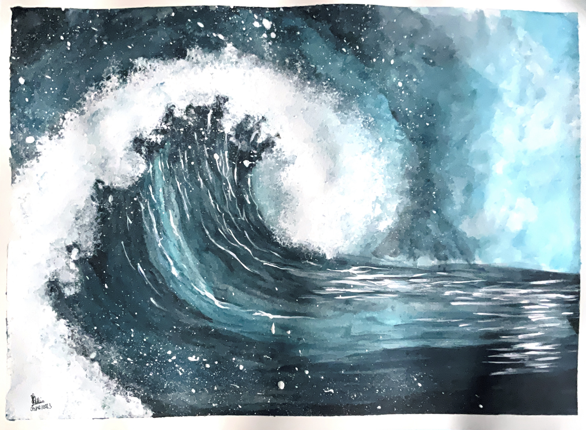
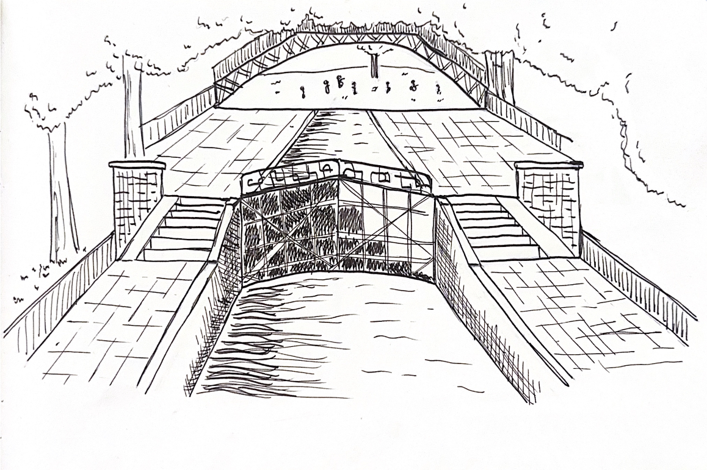
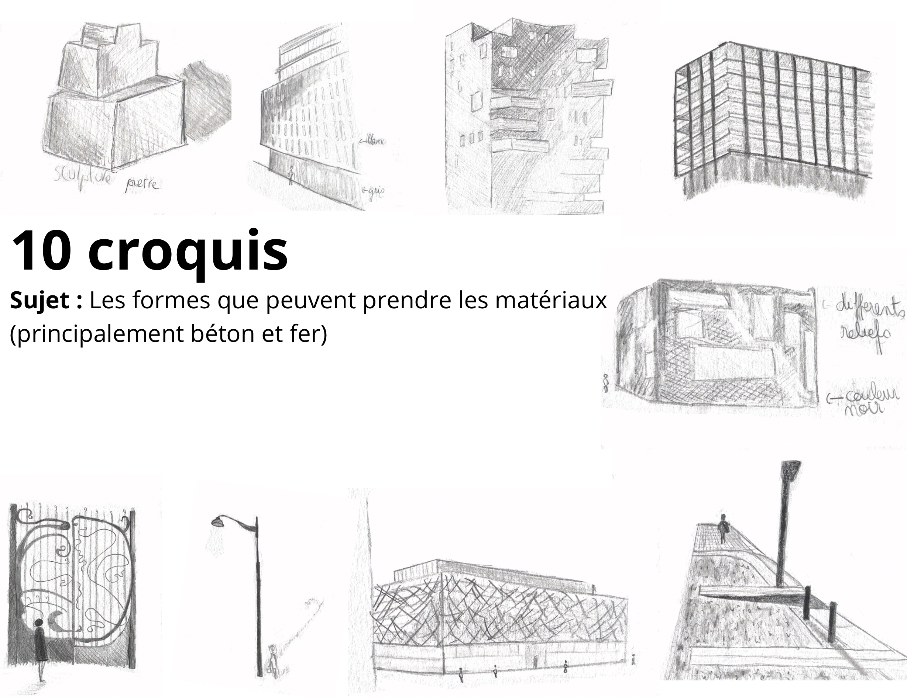
→ Voici certains de mes dessins et croquis.
- RÉSULTATS : Grâce au dessin j'ai trouvé un autre moyen d'expression qui me permet de visualiser clairement ce que j'imagine. Grâce à cet art mon imagination peut prendre vie.
Depuis 2020
Salle de sport
Salle de sport
- TITRE : Salle de sport
- CONTEXTE : Envie de changements.
- OBJECTIF : Maintenir mon corps en bonne santé.
- TRAVAIL : J'ai commencé la salle de sport au collège en participant à des cours collectifs. Maintenant je fais aussi de la musculation seule ou avec des amis.
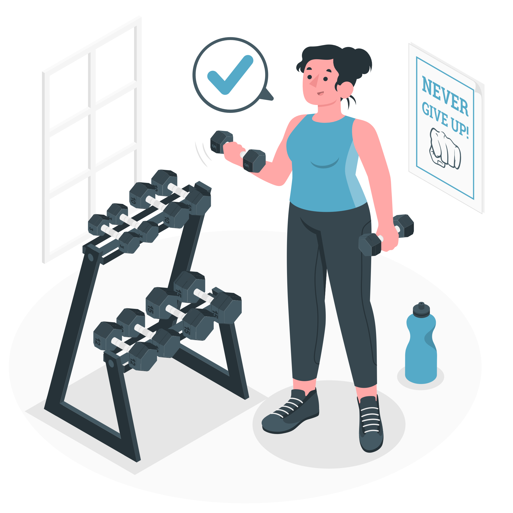
- RÉSULTATS : Le sport m'a enseigné la cohésion d'équipe lors des cours collectifs ainsi que la patience car les résultats attendus ne sont pas immédiats
Pendant 3 ans
Éclaireur de France
Éclaireur de France
- TITRE : Éclaireur de France
- CONTEXTE : Envie d'émancipation lors de mes années collège.
- OBJECTIF : Devenir plus autonome et savoir se débrouiller dans la nature.
- TRAVAIL : Aux Éclaireurs de France on nous apprends à créer, à l'aide de cordes et de matériaux trouver en forêts (branches, feuillages, ...), tous les équipements nécessaire sur un campement. Par exemple, nous réalisions notre espaces repas en faisant des tables et des bancs entre deux arbres.
- RÉSULTATS : J'ai appris l'autonomie, l'art manuel et la vie en communauté.
Mon CV
Contact
Si vous êtes intéressés par mon profil n'hésitez pas à me contacter !